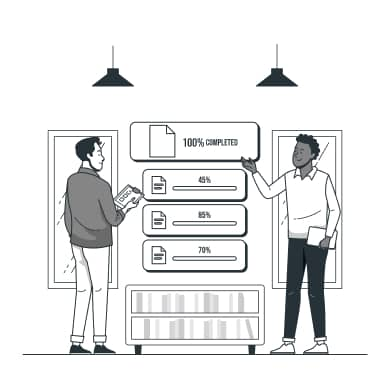
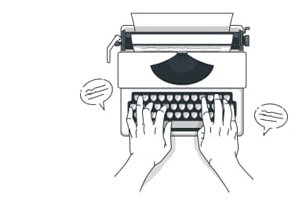
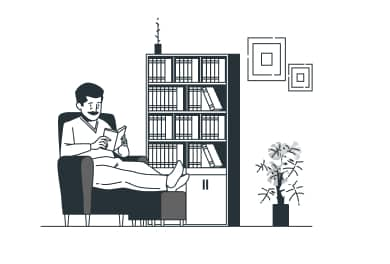
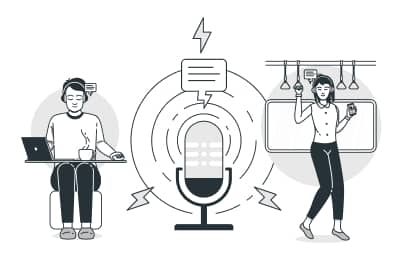

Learn Any Foreign Language
Learn Any Foreign Language With our teachers who write a program for each student, you will be able to make your first sketch after the first lesson. Get started
Skills
-

Speaking
Improve your English skills and confidence. Live classes and interactive lessons online. 20% extra free for a limited time only
Learn English online and improve your skills through our high-quality courses and resources – all designed for adult language learners.
-

Writing
One of the most important and extensive areas of natural science, the science that studies substances, also their composition
-

Reading
Perception and response actions of the user resulting from the use and/or upcoming use of the product, system or service
-

Listening
Here you can find activities to practise your listening skills. Listening will help you to improve your understanding